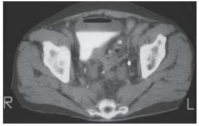

Questão 1 · Inf ectologia · 4000004917Tuberculose TB pleural, é a forma mais comum de TB extrapulmonar em pessoas não infectadas pelo HIV. Não podemos aceitar que:
A Nos pacientes com menor tempo de evolução dos sintomas pode ocorrer dispneia.
B Ocorre mais em jovens e cursa com dor torácica do tipo pleurítica.
C A tríade astenia, emagrecimento e anorexia ocorre em 70% dos pacientes.
D Ocorre febre com tosse seca, em 60%.
Questão 2 · Reumatologia · 4000004900A síndrome intermediária é considerada como uma complicação comum (7,75-84 %), principalmente observada em pacientes expostos a organofosforados altamente lipofílicos. Podemos aceitar que:
A Acredita-se que suas manifestações não sejam puramente nicotínicas, sendo observada fraqueza muscular difusa, a qual afeta principalmente músculos respiratórios e músculos proximais de membros, podendo evoluir rapidamente para uma falência respiratória e óbito.
B Acredita-se que suas manifestações sejam puramente nicotínicas, sendo observada fraqueza muscular difusa, a qual afeta principalmente músculos respiratórios e músculos proximais de membros, podendo evoluir rapidamente para uma falência respiratória e óbito.
C Acredita-se que suas manifestações sejam puramente nicotínicas, sendo observada fraqueza muscular local e não difusa, a qual afeta principalmente músculos respiratórios e músculos proximais de membros, podendo evoluir rapidamente para uma falência respiratória e óbito.
D Acredita-se que suas manifestações sejam puramente nicotínicas, sendo observada fraqueza muscular difusa, a qual afeta raramente músculos respiratórios e músculos proximais de membros, podendo evoluir rapidamente para uma falência respiratória e óbito.
Questão 3 · Medicina Preventiva · 4000004876O uso de tabaco na população idosa é comum e é causa importante de morbidade e mortalidade. Somente não podemos aceitar que:
A O tabagismo constitui-se em fator de risco (FR para a demência e seu abandono pode reduzir a carga de demência.
B A exposição passiva ao fumo também pode aumentar o risco de demência.
C Fumantes idosos apresentam maior intenção em abandonar o cigarro se comparados aos jovens.
D Fumantes idosos têm maior probabilidade de sucesso quando tentam parar de fumar.
Questão 4 · Hepatologia · 4000004369O tratamento da hepatite C crônica está indicado para todos os adultos (≥18 anos), sendo correto o item:
A Co-infectados pelo HIV, dependentemente do estadiamento de fibrose hepática ou da contagem de células LT- CD4+.
B Co-infectados pelo HIV, independentemente do estadiamento de fibrose hepática somente da contagem de células LT-CD4+.
C Co-infectados pelo HIV, independentemente do estadiamento contagem de células LT-CD4+ e sim da fibrose hepática.
D Co-infectados pelo HIV, independentemente do estadiamento de fibrose hepática ou da contagem de células LT-CD4+.
Questão 5 · Inf ectologia · 4000004232Nos casos clínicos, de TB pulmonar pós-primária ou secundária a tosse é produtiva, a expectoração pode ser purulenta ou mucoide, com ou sem sangue. Indique o item inadequado:
A A febre vespertina, sem calafrios, não costuma ultrapassar os 38,5°C.
B A sudorese noturna e a anorexia são raras.
C O exame físico geralmente mostra fácies de doença crônica e emagrecimento, embora indivíduos com bom estado geral e sem perda do apetite também possam ter TB pulmonar.
D A ausculta pulmonar pode apresentar diminuição do murmúrio vesicular, sopro anfórico ou mesmo ser normal.
Questão 6 · Reumatologia · 4000004204Colete informações junto aos acompanhantes ou familiares das vítimas de intoxicações por agrotóxicos, especialmente quando são crianças ou pacientes inconscientes. Sendo inadequado apenas:
A Verificar a disponibilidade da embalagem e bula do produto.
B A via de exposição: via oral, dérmica, inalatória, e outras menos frequentes.
C Agente sem quantidade utilizada.
D Uso de medicamentos, doenças agudas e crônicas, uso de álcool, drogas ilícitas.
Questão 7 · Inf ectologia · 4000004188Os progressos nos determinantes sociais da saúde têm tido um efeito na saúde dos brasileiros e isso provavelmente contribuiu também para a redução de doenças infecciosas, como a TB, no país. Somente não podemos aceitar que:
A Intervenções direcionadas aos determinantes socioeconômicos podem contribuir na melhoria do controle da TB no Brasil, a redução da pobreza não aparece como tema central.
B Erradicar a pobreza, em todas as suas formas e dimensões, incluindo a pobreza extrema, aparece como requisito indispensável para o desenvolvimento sustentável.
C Assegurar uma vida saudável e promover o bem-estar para todas e todos, devendo-se acabar com a epidemia global de tuberculose.
D A Estratégia pelo Fim da Tuberculose propõe a inclusão de intervenções socioeconômicas para prevenir e controlar a doença e também recomenda estratégias de proteção social para os pacientes.
Questão 8 · Medicina Preventiva · 4000004173Fomentar ações para garantir a realização das atividades de cuidado e prevenção da doença com recursos adequados, somente sendo inadequado o item:
A Inserir ações de controle da tuberculose nos Planos Plurianuais.
B Pautar a tuberculose nas instâncias de pactuação e controle social.
C Implementar ações de comunicação e mobilização social para diminuir a visibilidade da doença.
D Disponibilizar insumos para o diagnóstico e medicamentos para o tratamento de todas as formas de tubérculos.
Questão 9 · Inf ectologia · 4000004150Visando promover ações que viabilizem o tratamento adequado das populações com tuberculose mais vulnerável, especialmente pessoas vivendo com HIV e população privada de liberdade, somente sendo inadequado que:
A Adotar estratégias para acompanhamento do tratamento, capazes de reduzir os desfechos favoráveis.
B Estimular o desenvolvimento do cuidado centrado na pessoa com tuberculose.
C Organizar a rede de atenção local, tendo em vista a organização da atenção básica, para favorecer o acesso e a qualidade da assistência.
D Integrar ações de vigilância epidemiológica e assistência.
Questão 10 · Hepatologia · 4000004135Exames complementares recomendados a todos os portadores de hepatite C crônica, a serem solicitados na primeira consulta e durante o acompanhamento ambulatorial. Somente não podemos concordar com o item:
A Teste rápido – hepatite B, sífilis, HIV, detecção de possíveis coinfecções.
B Ultrassonografia de abdome superior a cada 6 meses, na vigência de cirrose.
C Beta HCG a ser realizado antes da indicação do tratamento.
D Biópsia hepática em todos os casos.
Questão 11 · Inf ectologia · 4000004108Para tratar de forma adequada e oportuna todos os casos diagnosticados de tuberculose visando à integralidade do cuidado. Somente não indicamos:
A Desenvolver ações que favoreçam a adesão ao tratamento da tuberculose.
B Integrar o cuidado do paciente com tuberculose com outros equipamentos da rede da saúde e assistência social.
C Implantar a vigilância da tuberculose droga resistente.
D Tratamento indiretamente observado.
Questão 12 · Reumatologia · 4000004094Os agrotóxicos classificados como inibidores de colinesterase, dos quais fazem parte organofosforados e carbamatos, constituem um grupo de substâncias amplamente utilizadas para controle de pragas na agropecuária, desinsetização urbana e doméstica e controle de vetores. Sendo assim, não podemos aceitar o seguinte item:
A Esses compostos também são utilizados na fabricação de armas químicas e de alguns produtos farmacológicos.
B Os organofosforados não englobam os derivados de ácido fosfórico e seus homólogos.
C Os carbamatos, por sua vez, são ésteres do ácido carbâmico ou do ácido N-metil-carbâmico.
D Constituem um grupo de substâncias amplamente utilizadas como inseticidas, nematicidas, larvicidas e acaricidas sistêmicos ou para controle de pragas.
Questão 13 · Hepatologia · 4000004083A alfaepoetina está indicada para o manejo da anemia das Terapêuticas para Hepatite C, de acordo com os seguintes critérios:
A Hemoglobina atual <9/dL ou queda >3,0g/dL em relação ao nível pré-tratamento; Pacientes sintomáticos.
B Hemoglobina atual <10g/dL ou queda >2,0g/dL em relação ao nível pré-tratamento; Pacientes sintomáticos.
C Hemoglobina atual <10g/dL ou queda >3,0g/dL em relação ao nível pré-tratamento; Pacientes sintomáticos.
D Hemoglobina atual <11g/dL ou queda >3,0g/dL em relação ao nível pré-tratamento; Pacientes assintomáticos.
Questão 14 · Inf ectologia · 4000004050Apenas algumas características especí cas desses esquemas para o tratamento da hepatite Cos diferenciam entre si, tais como os listados abaixo, exceto:
A Indicações para determinadas populações.
B Diferenças inerentes à comodidade posológica.
C Dispensabilidade da realização de exames não se altera.
D Preço praticado pelas indústrias fabricantes.
Revisar: possível letra faltando em enunciado
Questão 15 · Inf ectologia · 4000004035Os sintomas clássicos da Tuberculose podem ocorrer em qualquer das três apresentações. Na forma primária, a pós- primária (ou secundária) e a miliar como listados abaixo, indique a inadequada:
A Tosse persistente seca ou produtiva.
B Febre matutina.
C Sudorese noturna.
D Emagrecimento.
Questão 16 · Inf ectologia · 4000004017Na Tuberculose TB pleural eventualmente, pode simular pneumonia bacteriana aguda. Podemos apenas aceitar como correto o item:
A O líquido pleural tem características de transudado, predomínio de linfócitos e baixo rendimento da pesquisa de BAAR.
B O líquido pleural tem características de exsudato, predomínio de polimorfonucleares e baixo rendimento da pesquisa de BAAR.
C O líquido pleural tem características de exsudato, predomínio de linfócitos e baixo rendimento da pesquisa de BAAR.
D O líquido pleural tem características de exsudato, predomínio de linfócitos e alto rendimento da pesquisa de BAAR.
Questão 17 · Ginecologia · 4000004001Mulher é submetida à histerectomia-cesárea (subtotal) por placenta prévia centro total. Transcorridas 3 horas do procedimento, passa a apresentar sangramento via vaginal importante. O diagnóstico provável é:
A acretismo cervical.
B coagulação intravascular disseminada.
C lesão de artéria uterina.
D deiscência de sutura.
Questão 18 · Fatores de risco · 4000003986Uma gestante G3 P1 A1, com idade gestacional de 6 semanas, procura o ginecologista para tirar uma dúvida a respeito do risco de um novo abortamento. Não apresentou intercorrências nas gestações anteriores e o aborto aconteceu no primeiro trimestre da gestação anterior. A orientação mais correta nesse caso é:
A o risco de abortamento nesta gestação aumenta e chega a cifras de 50%.
B o risco de abortamento é muito grande, principalmente porque a gestante não está fazendo profilaxia com progesterona micronizada.
C o risco de abortamento é baixo, porém é o dobro de uma primeira gestação.
D o risco de abortamento é baixo, semelhante a uma primeira gestação.
Questão 19 · Diagnóstico · Quadro clínico · Introdução · 4000003969Mulher procura ginecologista referindo que logo após relação sexual, surgiu forte odor desagradável em região vulvo- vaginal. O agente etiológico provavelmente envolvido é:
A Gonococo
B Gardnerela
C Tricomonas
D Candida
Questão 20 · Pediatria · 4000003958Vacina que não pode ser utilizada na gravidez:
A Hepatite C
B Dupla adulto
C Gripe
D Raiva
Questão 21 · Ultrassom em obstetrícia USG · Malf ormações f etais · 4000003934Um ultrassom em gestação de 32 semanas evidencia oligoâmnio absoluto, rins fetais não identi cáveis e bolha gástrica ausente. A síndrome mais provável nesse caso é:
A Potter
B Edwards
C Patau
D Down
Questão 22 · Obstetrícia · 4000003917Puérpera na segunda semana, apresentando mamas flácidas e com pouco leite. O diagnóstico e tratamento adequado são:
A Hipogalactia / Ocitocina spray nasal.
B Ectasia ductal / Sulpirida.
C Hipogalactia / Sulpirida.
D Ectasia ductal / Ocitocina spray nasal.
Questão 23 · Obstetrícia · 4000003909Gestante hipertensa em tratamento medicamentoso refere congestão nasal e diminuição da libido. A droga anti-hipertensiva que provavelmente está sendo utilizada é:
A captopril
B furosemida
C atenolol
D metildopa
Questão 24 · Candidíase nãocomplicada · Diagnóstico · Quadro clínico · 4000003896Uma paciente com queixa de prurido vulvar apresenta exame de papanicolaou cujo laudo demonstra a presença de hifas. A melhor conduta nesse caso deve ser:
A somente orientar a realizar banho de assento com bicarbonato.
B tratar como vaginose bacteriana.
C tratar como candidíase.
D tratar somente com metronidazol via oral.
Questão 25 · Complicações da RPM · 4000003872Uma gestante de 32 semanas é internada em uma maternidade de alto risco com diagnóstico de amniorrexe prematura. A complicação que não é esperada nesse caso é:
A Descolamento prematuro de placenta.
B Sofrimento fetal.
C Compressão de cordão umbilical.
D Corioamnionite.
Questão 26 · Obstetrícia · 4000003741Gestante dá entrada na maternidade com quadro de trabalho de parto prematuro. Iniciada a tocólise, após 3 horas de medicação, passa a apresentar depressão respiratória e diminuição do reflexo patelar. A droga que provavelmente foi utilizada como tocolítico nesse caso é:
A Nifedipina
B Terbutalina
C Atosiban
D Sulfato de Magnésio
Questão 27 · Métodos hormonais combinados · Critérios de elegibilidade da OMS · 4000003727Tabela dos critérios de elegibilidade OMS Mulher de 34 anos que fuma 20 cigarros por dia, segundo critérios da OMS de elegibilidade para uso de anticoncepcionais, para uso de pílula contendo estrogênio e progesterona, estaria enquadrada na categoria:
A 1
B 2
C 3
D 4
Questão 28 · Hormonioterapia · 4000003713Situação que não tem relação com o uso do tamoxifeno:
A hiperplasia endometrial.
B pólipo endometrial.
C miomatose uterina.
D câncer de endométrio.
Questão 29 · Obstetrícia · 4000003689Em acompanhamento pré-natal de rotina, considere os seguintes exames: I. Hb/Ht; II. Urina I; III. HbsAg; IV. HIV. São obrigatórios:
A I e II, apenas.
B I, II e III, apenas.
C II e III, apenas.
D I, II, III e IV.
Questão 30 · Hiperprolactinemia · Hiperprolactinemia · 4000003673Puérpera, amamentando, usuária de anticoncepcional oral contínuo, apresenta ressecamento vaginal que gera desconforto nas relações sexuais. O provável hormônio envolvido nesse problema é:
A progesterona
B estrogênio
C prolactina
D testosterona
Questão 31 · Foliculogênese ovariana · 4000003312Uma pré-bubere tem aproximadamente 400 a 500 mil folículos aptos a recrutamento e ovulação. Na vida intra-uterina a população folicular máxima é de aproximadamente:
A 2 milhões de folículos com 20 semanas de gestação.
B 7 milhões de folículos com 40 semanas de gestação.
C 7 milhões de folículos com 20 semanas de gestação.
D 700.000 folículos com 40 semanas de gestação.
Questão 32 · Conduta na RPM entre 34 a 36 67 semanas · 4000003304Gestante de 34/3 semanas, internada por aminorrexe prematura, ultrassom evidenciando ILA: 2,0 cm, fez uso de Celestone Soluspan IM há 1 semana. A conduta mais adequada ao caso é:
A repetir o corticóide e interromper a gestação em 48 horas.
B interromper a gestação.
C aguardar 36 semanas e interromper a gestação.
D repetir o corticóide e interromper apos 1 semana.
Questão 33 · Carcinoma Medular · 4000003295É um marcador sensível e específico do carcinoma medular de tireóide, que pode ser medido no sangue no estado basal ou após a administração de secretagogos como cálcio e pentagastrina:
A Tireoglobulina.
B Gastrina.
C Calcitonina.
D Hormônio Folículo Estimulante.
Questão 34 · Cardiologia · 4000003290Paciente de 53 anos, internado na enfermaria da ortopedia há 3 dias por fratura de fêmur, aguardando cirurgia. Após discussão com a equipe, opta-se por adiantar a cirurgia para data de hoje, porém o paciente recebeu 1mg/kg de enoxaparina há 2 horas. A técnica anestésica que deve ser utilizada neste caso é:
A Anestesia peridural com cateter.
B Raquianestesia.
C Anestesia peridural sem cateter.
D Anestesia geral.
Questão 35 · Pneumologia · 4000003280Sobre neoplasias pulmonares, assinale a correta:
A Nódulo bem circunstrito, com calcificação periférica de padrão irregular com imagem tipo “pipoca” é sugestiva de hamartoma pulmonar, neoplasia de caráter maligno.
B Nódulo bem circunstrito, com calcificação periférica de padrão irregular com imagem tipo “pipoca” é sugestivo de hamartoma pulmonar, neoplasia de caráter benigno.
C Nódulo irregular, espiculado, com calcificação central, de disposição pleural é patognomômico de carcinoma espinocelular.
D Nódulo irregular, espiculado, com calcificação central, de disposição pleural é patognomômico de carcinoma de pequenas células.
Questão 36 · Cirurgia · Tratamento cirúrgico · Gastrectomia Vertical Laparoscópica · 4000003268Deve-se evitar a gastrectomia vertical no segmento de cirurgia da obesidade nos seguintes casos:
A Doença de refluxo gastro-esofágico e esofagite erosiva.
B Pacientes com índice de massa corpórea > 40.
C Pacientes hipertensos em uso de bloqueador de canal de cálcio.
D Não há contraindicações para gastrectomia vertical.
Questão 37 · Exames de Imagem · Cirurgia · Manif estações Clínicas e Exame Físico · 4000003260Paciente feminina, obesa, multípara, 46 anos, após alimentação copiosa apresentou dor abdominal tipo cólica, há 8 horas, sem melhora com uso de anti-espasmódico. Nega febre. Procurou o pronto-socorro onde foi medicada com alívio parcial dos sintomas. Ao exame físico apresentava-se em bom estado geral, hidratada, corada, anictérica. Sem alterações cardiopulmonares. Abdome com ruídos presente, dor a palpação de hipocôndrio direito, com pausa inspiratória à palpação profunda desta região. Submeteu-se a ecogra a de abdome que evidenciou imagem hiperecoica impactada em infundíbulo vesicular, com sombra acústica posterior, de 40 mm, com espessura da parede vesicular de 8 mm. O sinal semiológico relatado no caso acima é descrito como:
A Sinal de Jobert.
B Sinal de Mussy.
C Sinal de Murphy.
D Sinal de Dumphy.
Questão 38 · Endocrinologia · 4000003249Fazem parte da Neoplasia Endócrina Múltipla tipo 1:
A Hiperparatireoidismo primário, lesão pancreática e hipofisária.
B Hiperparatireoidismo primário, tumor estromal e hipofisário.
C Hipoparatireoidismo primário, tumor estromal e adrenal.
D Hipoparatireoidismo primário, gastrinoma e hábito marfanoide.
Questão 39 · Reumatologia · 4000003239Mulher de 23 anos, queixando-se de dor em antebraço esquerdo após atividades físicas, de início há 4 meses. Queixa-se também no mesmo período de febre baixa, diária, não aferida, associada à perda de peso, cefaleias esporádicas auto- limitadas e crises hipertensivas que a fez procurar o pronto-socorro por 4 vezes. Nega comorbidades. Nega tabagismo/etilismo. Ao exame físico encontra-se em bom estado geral, bulhas rítmicas em 2 tempos, sem sopros audíveis, pressão arterial sistólica em repouso de 150mmHg, ausculta pulmonar normal. Exame físico do antebraço esquerdo com tempo de enchimento capilar lenti cado, sem lesões tró cas e redução da amplitude do pulso da artéria braquial esquerda. Apresenta velocidade de hemossedimentação aumentada. A principal hipótese diagnóstica é:
A Lupus Eritematoso Sistêmico.
B Tromboangeíte obliterante.
C Arterite de Takayasu.
D Embolia arterial aguda.
Revisar: possível letra faltando em enunciado
Questão 40 · Pneumotórax Hipertensivo · Cirurgia · 4000003220Jovem de 19 anos, vítima de acidente automobilístico de alto impacto é trazido em prancha rígida e colar cervical após 40 minutos do trauma. Há relato de ejeção do veículo e grande deformidade do automóvel. Durante atendimento pré- hospitalar foi administrado 1000ml de ringer lactato aquecido e 1g de ácido tranexâmico. É admitido em sala de emergência com vias aéreas pérvias, de colar cervical. Ao exame físico pulmonar: escoriação em hemitórax esquerdo, ausculta abolida a esquerda, hipertimpânico, com estase jugular. Bulhas normofonéticas. Pressão arterial: 80x40 mmHg, Frequência cardíaca: 125 bpm, saturação de oxigênio periférico: 82%, frequência respiratória: 38 irpm. Glasgow 13, pupilas isocóricas, sem dé cits focais aparentes. Pelve fechada. Exame físico abdominal normal. Assinale a alternativa sequencial correta, preconizada pelo Advanced Trauma Life Support (ATLS) 10ª edição, por ordem de execução.
A Ofertar oxigênio, drenagem de tórax, lavado peritoneal diagnóstico.
B Punção de alívio em segundo espaço intercostal, na linha médio-clavicular, seguida de drenagem de tórax.
C Punção de alívio em segundo espaço intercostal, na linha médio clavicular, seguida de colocação de um dreno pig tail.
D Punção de alívio em quinto espaço intercostal esquerdo, descompressão manual, seguido de drenagem torácica.
Questão 41 · Condução Clínica · 4000003072Jovem de 19 anos após abuso de cocaína dá entrada em sala de emergência trazido pelo serviço de resgate apresentando hematêmese franca, em grande volume, de início há 10 minutos. Na admissão em sala de emergência apresenta-se em mal estado geral, descorado, pálido, comatoso, apresentando vários episódios de vômitos em grande quantidade. Pressão arterial: 80x40mmHg, Frequência cardíaca: 145bpm, Frequência respiratória: 31irpm, Saturação de oxigênio periférica: 89%. A conduta mais adequada neste momento, respectivamente por ordem de prioridade é:
A 1- Endoscopia digestiva alta para diagnóstico e tratamento da lesão; 2- intubação orotraqueal; 3- reposição volêmica.
B 1- Endoscopia digestiva alta para diagnóstico e tratamento da lesão; 2- reposição volêmica; 3- intubação orotraqueal.
C 1- Intubação orotraqueal; 2-endoscopia digestiva alta para tratamento da lesão; 3- reposição volêmica.
D 1-Intubação orotraqueal e reanimação volêmica; 2- endoscopia digestiva alta para diagnóstico e tratamento.
Questão 42 · Manif estações Clínicas · Complicações · Exames de Imagem · 4000003062Idoso, 68 anos, queixando-se de dor abdominal há 4 dias, mais localizada em fossa ilíaca esquerda, associada à febre, diarreia e queda do estado geral. Queixa-se também de disúria. Nega vômitos. Foi internado para investigação e realizado tomogra a abdominal com contraste endovenoso (imagem abaixo). Ao exame físico: regular estado geral, corada, hidratada. Aparelho cardiopulmonar sem alterações. Abdome com ruídos presentes, ácido, doloroso em fossa ilíaca esquerda e hipogástrio, sem sinais de peritonite. Hemograma com leucocitose, função renal normal, e exame de urina com leucocitúria abundante. Assinale a alternativa correta:

A Trata-se de diverticulite aguda simples - Hinchey II.
B Trata-se de diverticulite aguda, complicada com fístula colovesical.
C Trata-se de doença diverticular do cólon complicada com abscesso em loja renal esquerda.
D Trata-se de diverticulite aguda complicada, Hinchey III, com sinais tomográficos de pneumoperitônio.
Questão 43 · Def inição · 4000003040A úlcera linear que envolve a metade inferior do canal anal, em geral localizada na comissura posterior da linha média é definida por:
A Fissura Anal.
B Fístula anal.
C Hemorroida.
D Cisto pilonidal.
Questão 44 · Escore de Alvarado · Cirurgia · Apendicite Aguda Não Complicada · 4000003023Paciente masculino, 18 anos, sem comorbidades, há 2 dias com hiporexia, náuseas, associado a desconforto epigástrico, procurou pronto-socorro hoje, pois a dor havia piorado, mais intensa, mais localizada em fossa ilíaca direita junto com 2 picos de febre aferida. Nega vômitos. Ao exame, bom estado geral, corado, hidratado, eupneico, anictérico. Exame físico cardiopulmonar normal, exceto por frequência cardíaca de 112 bpm. Ao exame abdominal: ruídos presentes, sem alterações na inspeção, porém com dor a palpação de fossa ilíaca direita. Sinal de Blumberg presente. Foi submetido a exames laboratoriais que, somado aos dados acima resultaram em um escore de Alvarado de 09 pontos. Não há exames de imagem disponível no serviço. A conduta mais adequada é:
A Transferência imediata para realizar ecografia de abdome.
B Jejum, hidratação, analgesia e transferência para exames de imagem.
C Alta com sintomáticos.
D Apendicectomia.
Questão 45 · Apresentação Clínica e Diagnóstico · 4000003012Fazem parte do quadro clínico típico da fissura anal crônica:
A Plicoma sentinela, fissura crônica e papilite hipertrófica.
B Hematoquezia, dor anal e diarreia.
C Hematoquezia, fissura e perda ponderal.
D Plicoma sentinela, fissura crônica e prurido anal.
Questão 46 · Classif icação do choque hemorrágico · Cirurgia · 4000002996Um paciente, vítima de capotamento de automóvel com os seguintes sinais vitais: PA: 60 x 40mmHg, FC: 125 bpm, FR: 31 irpm, Oligúrico, Agitado. Qual a classe do choque hipovolêmico, segundo o Advanced Trauma Life Support (ATLS)?
A I
B II
C III
D IV
Questão 47 · Hepatobiliares · 4000002984A manifestação hepática mais comum associada à Retocolite Ulcerativa é:
A Hepatite transinfecciosa.
B Colangite esclerosante primária.
C Colelitíase.
D Divertículos de colédoco.
Questão 48 · Apresentação Clínica e Classif icação · Cirurgia · 4000002968Um paciente com hemorróida interna com sangramento e prolapso, em que se faz a redução manual é classificada em grau:
A I
B II
C III
D IV
Questão 49 · Hematologia · 4000002953Assinale a alternativa correta sobre o traço falcêmico.
A Apresenta hemograma normal.
B Apresenta anemia leve a moderada.
C Apresenta esplenomegalia discreta.
D Apresenta dores ósseas.
Questão 50 · Hematologia · 4000002791Assinale a alternativa correta sobre a esferocitose hereditária:
A Teste de fragilidade osmótica hemolítico.
B Teste do soro acidificado positivo.
C Teste de Coombs positivo.
D Teste de afoiçamento positivo.
Questão 51 · Hematologia · 4000002772Com relação à anemia, assinale a alternativa a alternativa correta:
A A anemia é um diagnóstico que atinge até 25% da população.
B Os quadros crônicos de anemia sempre apresentam palidez, taquicardia e letargia.
C A produção diária de reticulócitos é maior do que a destruição m condições fisiológicas.
D A capacidade de fixação do ferro (TIBC auxilia no cálculo de saturação de ferro para avaliar a presença de deficiência de ferro.
Questão 52 · Hematologia · 4000002758Assinale a alternativa incorreta sobre a alfa talassemia:
A Os indivíduos com deleção de 2 alfa-globinas são descritos como portadores de traço alfa-talassêmico.
B A anemia ferropriva, a saturação de ferro e a ferritina normais são diagnósticos diferenciais.
C A alfa-talassemia major é extremamente rara.
D A alfa-talassemia ocorre pelo aumento da cadeia de alfa da globina, havendo sobra de cadeia beta.
Questão 53 · Conduta na Doença de Crohn · 4000002747A aterapia biológica com anti-TNF, infliximabe ou adalimumabe é útil na doença de Crohn para:
A Induzir a remissão da doença e mantê-la.
B Curar a doença.
C Induzir a remissão da doença sem mantê-la.
D Manter a remissão da doença sem induzi-la.
Questão 54 · Conduta na Doença de Crohn · 4000002727Sobre a terapia da doença de Crohn assinale a alternativa correta:
A O corticoide é útil para induzir a remissão da doença e mantê-la.
B A azatioprina é útil para induzir a remissão da doença e mantê-la.
C A azatioprina é útil para manter a remissão da doença.
D O corticoide é útil para manter a remissão da doença.
Questão 55 · Uso crônico de imunobiológicos · 4000002712Está contraindicado nos pacientes com tratamento com anti-TNF quais dos procedimentos citados abaixo?
A Teste tuberculínico e raio X de tórax.
B Vacinas de vírus vivo e febre amarela.
C Coprocultura com pesquisa de agentes enteropatogênicos e detecção de INF-gama.
D Sorologia para hepatite B e C e para HIV.
Questão 56 · Hematologia · 4000002700A avaliação do paciente com anemia deve conter obrigatoriamente uma história familiar e pessoal detalhada, além de exame físico completo e exames laboratoriais inicias. Dentro dos exames laboratoriais que devem ser solicitados em um primeiro momento estão todos os abaixo, exceto:
A Hemograma completo.
B Contagem de reticulócitos.
C DHL.
D Hematoscopia.
Questão 57 · Atraso Puberal · 4000002686Com relação ao retardo do desenvolvimento puberal, que pode ser uma das manifestações clínicas das doenças inflamatórias intestinais, assinale a alternativa correta:
A O atraso do início do desenvolvimento não ocorre na doença de Crohn.
B O atraso do início do desenvolvimento puberal não ocorre na colite ulcerativa.
C A amenorreia secundária não ocorre na doença de Crohn, mas ocorre na colite ulcerativa.
D O retardo do desenvolvimento puberal pode ser o sintoma inicial da doença de Crohn na ausência de diarreia ou dor abdominal.
Questão 58 · Pediatria · 4000002675Sobre os critérios diagnósticos de disquezia em lactentes, assinale a alternativa correta:
A O choro antes de uma evacuação bem ou mal sucedida e, pelo menos, 10 minutos de pressão está presente.
B A maioria dos lactantes apresenta outros problemas de saúde.
C Os sintomas persistem por mais de 30 minutos.
D O choro antes de uma evacuação mal sucedida e, pelo menos, 20 minutos de pressão está presente.
Questão 59 · Gastroenterologia · Síndrome Dispéptica · 4000002657Assinale a alternativa correta sobre regurgitação, vômitos e ruminação:
A Regurgitação, assim como o vômito, envolve o diafragma, o estômago e o intestino.
B A regurgitação é um vômito pequeno.
C Ruminação é um vômito que é mastigado e engolido novamente.
D Vômito envolve o sistema nervoso central com envolvimento de músculos esqueléticos nos quais o conteúdo gástrico é expelido pela boca por causa da coordenação de movimentos do intestino delgado, do estômago, do esôfago e do diafragma.
Questão 60 · Síndrome Dispéptica · 4000002647Em relação à síndrome dos vômitos cíclicos (SVC), assinale a alternativa correta:
A O diagnostico de SVC deve contar obrigatoriamente com 1 episodio por mês, em 6 meses de intensas náuseas e vômitos paroxísticos.
B Os episódios são sempre iguais em todos os pacientes.
C Os episódios são separados por semanas a meses, com retorno à saúde basal entre os episódios de vômitos.
D Os pacientes podem apresentar apenas náuseas, apenas vômitos ou náuseas e vômitos associados.
Questão 61 · Desnutrição · 4000002628Sobre a fome oculta em crianças assinale a alternativa correta:
A É a carência crônica de micronutrientes decorrente de uma alimentação pobre em micronutrientes.
B É a carência de micronutrientes que ocorre somente em indivíduos desnutridos.
C É a carência aguda de micronutrientes decorrente da não suplementação medicamentosa.
D É a carência nutricional decorrente de um a alimentação pobre em macronutrientes.
Questão 62 · Quadro Clínico · 4000002623A de ciência de vitamina A é a responsável pelo aumento da morbidade e da mortalidade infantil. Sobre as manifestações oculares da deficiência de vitamina A pode-se afirmar que:
A A cegueira noturna é uma manifestação tardia da deficiência de vitamina A.
B O tratamento com megadoses de vitamina A corrige a cegueira noturna em um período que varia de 1 a 2 dias.
C A xerose da córnea é lesão grave e geralmente há evolução para a cegueira, mesmo com tratamento adequado.
D A mancha de Bitot é a primeira manifestação ocular da deficiência da vitamina A.
Questão 63 · Pediatria · 4000002613Sobre nutrição materna e infantil assinale a alternativa correta:
A A nutrição materna deficiente afeta principalmente o sistema motor da criança.
B A inadequada nutrição materna e infantil pode limitar o desenvolvimento de aspectos importantes da arquitetura do cérebro.
C A anemia materna no primeiro trimestre gestacional é um dos fatores impeditivos para o crescimento infantil.
D O estado nutricional adequado da gestante é importante, mas não é fator de risco para maiores problemas comportamentais na idade escolar, mesmo na ausência de déficits neurológicos evidentes.
Questão 64 · Tratamento medicamentoso · Esquemas de tratamento · 4000002403Quando consideramos a avaliação dos riscos e benefícios potenciais da terapia antiviral para Hepatite C, podemos apenas aceitar que:
A Em pacientes em diálise e potenciais receptores de transplante de rim, o emprego de sofosbuvir não deve ser realizado, uma vez que não há recomendação para o seu uso em pacientes com depuração de creatinina inferior a 30mL/min.
B Em pacientes em diálise e potenciais receptores de transplante de rim, o emprego de sofosbuvir deve ser realizado com cautela e de forma individualizada, considerando-se os riscos e benefícios potenciais da terapia antiviral, uma vez que não há recomendação para o seu uso em pacientes com depuração de creatinina inferior a 30mL/min.
C Em pacientes em diálise e potenciais receptores de transplante de rim, o emprego de sofosbuvir deve ser realizado sem necessidade de cautela, uma vez que não há recomendação para o seu uso em pacientes com depuração de creatinina inferior a 90mL/min.
D Em pacientes em diálise e potenciais receptores de transplante de rim, o emprego de sofosbuvir deve ser realizado com cautela e de forma individualizada, considerando-se os riscos e benefícios potenciais da terapia antiviral, uma vez que não há recomendação para o seu uso em pacientes com depuração de creatinina superior a 30mL/min.
Questão 65 · Diagnóstico laboratorial · 4000002091Assinale a alternativa que contém valores de vitamina D considerados adequados para crianças:
A Pelo menos 20ng/Ml
B Entre 20 e 30ng/mL
C Até 20ng/mL
D Pelo menos 30ng/mL
Questão 66 · Endocrinologia · 4000002080Podemos considerar a complicação da retinopatia como comum no paciente com diabetes de longa evolução e mais grave naqueles com mau controle da doença. Podemos assim aceitar que:
A O rastreio sistemático e precoce dessa complicação não pode evitar a evolução para a cegueira diabética, que é irreversível, devendo para isso haver disponibilidade, na rede pública e privada de saúde, do acesso ao endocrinologista, ao oftalmologista bem como aos procedimentos mais complexos.
B O rastreio sistemático e precoce dessa complicação pode evitar a evolução para a cegueira diabética, que é reversível, devendo para isso haver disponibilidade, na rede pública e privada de saúde, do acesso ao endocrinologista, ao oftalmologista bem como aos procedimentos mais complexos.
C O rastreio sistemático e precoce dessa complicação pode evitar a evolução para a cegueira diabética, que é irreversível, devendo para isso haver disponibilidade, na rede privada de saúde, do acesso ao endocrinologista, em como aos procedimentos mais simples.
D O rastreio sistemático e precoce dessa complicação pode evitar a evolução para a cegueira diabética, que é irreversível, devendo para isso haver disponibilidade, na rede pública e privada de saúde, do acesso ao endocrinologista, ao oftalmologista bem como aos procedimentos mais complexos.
Questão 67 · Conduta na Doença de Crohn · 4000002070Na Doença de Crohn (DC) os pacientes com infecções ou abscessos devem receber antibioticoterapia apropriada com drenagem cirúrgica ou percutânea, sendo correto que:
A Conforme o mais apropriado, considerando as condições assistenciais do local de atendimento.
B Conforme o mais apropriado, independente das condições assistenciais do local de atendimento.
C Independentemente de ser o mais apropriado, considerando as condições assistenciais do local de atendimento.
D Conforme o menos apropriado, considerando as condições assistenciais e não do local de atendimento.
Questão 68 · Hepatite B · Hepatite B crônica · Biópsia hepática · 4000002057A biópsia hepática é útil no diagnóstico de outras doenças hepáticas concomitantes com hepatite viral crônica – como a doença gordurosa, que impacta de maneira significativa a evolução dos casos e o manejo dos pacientes. Podemos assim, indicar como errado o item:
A A biópsia hepática é o exame padrão-ouro para a avaliação da fibrose hepática.
B É excepcional na avaliação de hepatite B crônica e reservada aos casos em que não há dúvidas na indicação de tratamento.
C Biópsia pode ser realizada com diferentes técnicas e tipos de agulha.
D A biópsia hepática é um procedimento invasivo, que requer uma estrutura apropriada.
Questão 69 · Interpretação dos marcadores sorológicos · Coinf ecção HIVHepatite B · 4000002035Uma vez portador do HBV, o indivíduo tende a evoluir com menores taxas de soro conversão espontânea do HBeAg/ anti- HBe e HBsAg/anti-HBs, assim podemos aceitar que:
A apresenta baixas taxas de replicação viral.
B apresenta iguais taxas de replicação viral.
C apresenta altas taxas de replicação viral.
D não apresenta mudanças taxas de replicação viral.
Questão 70 · Endocrinologia · 4000002021Considerando a avaliação da neuropatia autonômica cardiovascular NAC por diabetes, podemos concordar que:
A Apresentam achados que estão relacionados com baixa frequência de hipertrofia ventricular esquerda e eventos cardiovasculares sérios, fatais e não fatais, em pacientes diabéticos com NAC.
B Apresentam achados que estão relacionados com alta frequência de hipotrofia ventricular esquerda e eventos cardiovasculares sérios, fatais e não fatais, em pacientes diabéticos com NAC.
C Apresentam achados que estão relacionados com alta frequência de hipertrofia ventricular direita apenas, e eventos cardiovasculares sérios, fatais e não fatais, em pacientes diabéticos com NAC.
D Apresentam achados que estão relacionados com alta frequência de hipertrofia ventricular esquerda e eventos cardiovasculares sérios, fatais e não fatais, em pacientes diabéticos com NAC.
Questão 71 · Exames Radiológicos · 4000001999A Doença de Crohn (DC) é uma doença intestinal inflamatória que a Radiogra a de trânsito de delgado, ou tomogra a computadorizada enteral (TC enteral) ou ressonância magnética enteral (RM enteral) podem ser indicadas, se disponíveis. Fundamentando seu uso no item:
A A avaliação da extensão da doença e comprometimento do intestino delgado proximal é importante, pois influenciará na conduta terapêutica e no seguimento do paciente.
B A avaliação da extensão da doença e comprometimento do intestino delgado proximal não é importante, pois influenciará na conduta terapêutica e no seguimento do paciente.
C A avaliação da extensão da doença e comprometimento do intestino delgado proximal é importante, pois influenciará na conduta terapêutica, mas não no seguimento do paciente.
D A avaliação da extensão da doença e comprometimento do intestino delgado grosso é importante, pois influenciará na conduta terapêutica e no seguimento do paciente.
Questão 72 · Cardiologia · 4000001983Quando analisamos os prognósticos de pacientes com hipertensão arterial, qual dos itens abaixo pode ser determinado como adequado?
A As aferições de PA pela monitorização residencial da pressão arterial MRPA na avaliação do prognóstico de eventos futuros, apresentam pior correlação com os eventos do que as medidas de consultório na maioria deles.
B As aferições de PA pela monitorização residencial da pressão arterial MRPA na avaliação do prognóstico de eventos futuros, apresentam melhor correlação com os eventos do que as medidas de consultório na maioria deles.
C As aferições de PA pela monitorização residencial da pressão arterial MRPA na avaliação do prognóstico de eventos futuros, não apresentam correlação com os eventos do que as medidas de consultório na maioria deles.
D As aferições de PA pela monitorização residencial da pressão arterial MRPA na avaliação do prognóstico de eventos futuros, apresentam melhor correlação com as medidas do que com os eventos de consultório na minoria deles.
Questão 73 · Coinf ecção Hepatite BHepatite C · Coinf ecção HIVHepatite C · Coinf ecção hepatite BHepatite CHIV · 4000001969Considerando que os vírus das hepatites B, C e Delta e o HIV apresentam formas de transmissão em comum, podemos apenas determinar como adequado o item:
A Co-infecção com outros vírus não pode ocorrer e afetar de forma significativa a história natural da doença.
B A presença concomitante desses agentes infecciosos não agrava, somente acelera a evolução da hepatite.
C A presença concomitante desses agentes infecciosos agrava a atividade necro inflamatória.
D O principal fator associado à evolução para cronicidade da infecção pelo vírus da hepatite B é a via que a infecção ocorre.
Questão 74 · Cardiologia · 4000001953Infelizmente os dados na literatura quanto à incidência de PCR no Brasil são escassos. Podemos entretendo indicar que ocorre erro no item:
A O principal ritmo de PCR em ambiente extra-hospitalar não é a Fibrilação Ventricular (FV e sim a Taquicardia Ventricular (TV).
B A Fibrilação Ventricular (FV e a Taquicardia Ventricular (TV, juntas chegando a quase 80% dos eventos.
C A Fibrilação Ventricular (FV e a Taquicardia Ventricular (TV apresentam um bom índice de sucesso na reversão, se prontamente tratados.
D Quando a desfibrilação é realizada precocemente, em até 3 a 5 minutos do início da PCR, a taxa de sobrevida é em torno de 50% a 70%.
Questão 75 · Pneumonia adquirida na comunidade PAC · 4000001944A Tomogra a Computadorizada, a TC de tórax teve demonstrado recentemente que o emprego da TC aumenta a taxa de diagnósticos em pacientes com PAC e radiografia de tórax normal. Podemos assim concordar com o item:
A Pode não confirmar a doença em pacientes com radiografia com opacidades, o que não permitiria a descontinuação de antibióticos em uma proporção significativa de casos.
B Pode confirmar a doença em pacientes com radiografia com opacidades, o que permitiria a descontinuação de antibióticos em uma proporção significativa de casos.
C Pode não confirmar a doença em pacientes com radiografia com opacidades, o que permitiria a descontinuação de antibióticos em uma proporção insignificante de casos.
D Pode não confirmar a doença em pacientes com radiografia com opacidades, o que permitiria a descontinuação de antibióticos em uma proporção significativa de casos.
Questão 76 · Cardiologia · 4000001936Sobre o risco de trombose de stent em pacientes que foram submetidos à ICP com stents convencionais nos primeiros dias e semanas após o procedimento, podemos concordar que:
A Uma dupla Antiagregação Plaquetária é recomendada por um semestre.
B Os stents convencionais foram reservados, idealmente, para os pacientes com risco muito alto de sangramento e que necessitam de um período mais curto (ao menos um mês de dupla Antiagregação.
C No Brasil, o stent convencional metálico não é utilizado principalmente em serviços públicos.
D Trombose de stent em pacientes com stents metálicos é muito mais raro nos primeiros dias e semanas após o procedimento.
Questão 77 · Reumatologia · 4000001911Considerando que nas intoxicações agudas com inibidores de colinesterase, os receptores são classificados em muscarínicos e nicotínicos. Os primeiros, de uma forma geral, fazem parte da inervação parassimpática de diversos órgãos e tecidos, sendo também encontrados no sistema nervoso central (SNC) e em glândulas exócrinas parassimpáticas. Sendo correto que:
A Os receptores nicotínicos estão localizados no córtex adrenal, na junção mioneural e em neurônios pós- ganglionares de cadeias parassimpáticas e simpáticas.
B Os receptores nicotínicos estão localizados na medula adrenal, fora da junção mioneural e em neurônios pós- ganglionares de cadeias parassimpáticas e simpáticas.
C Os receptores nicotínicos estão localizados na medula adrenal, na junção mioneural e em neurônios pós- ganglionares de cadeias parassimpáticas e simpáticas.
D Os receptores nicotínicos estão localizados na medula adrenal, na junção mioneural e em neurônios pós- ganglionares de cadeias parassimpáticas e não nas simpáticas.
Questão 78 · Endocrinologia · 4000001860O tratamento com insulina traz inúmeros benefícios, mas exige muitos cuidados. A insulina é um medicamento avaliado e classificado como potencialmente perigoso. Assim, está correto que:
A Medicamentos dessa categoria são os que apresentam risco reduzido de danos significativos em decorrência de falhas de utilização.
B Medicamentos dessa categoria não são os que apresentam risco aumentado de danos significativos em decorrência de falhas de utilização.
C Medicamentos dessa categoria são os que apresentam risco aumentado de danos significativos em decorrência de correta utilização.
D Medicamentos dessa categoria são os que apresentam risco aumentado de danos significativos em decorrência de falhas de utilização.
Questão 79 · Reumatologia · 4000001846Colete informações junto aos acompanhantes ou familiares das vítimas de intoxicações por agrotóxicos, especialmente quando são crianças ou pacientes inconscientes. Assim uma boa orientação prática seria de:
A Ligue para o Centro de Informação e Assistência Toxicológica (CIATox de sua região para orientações sobre suspeita de intoxicações com manifestações clínicas atípicas, quadros iniciais de difícil identificação ou caso haja qualquer dúvida em relação à intoxicação.
B Ligue para o Centro de Informação e Assistência Toxicológica (CIATox de sua capital apenas para orientações sobre suspeita de intoxicações com manifestações clínicas atípicas, quadros iniciais de difícil identificação ou caso haja qualquer dúvida em relação à intoxicação.
C Ligue para o Centro de Informação e Assistência Toxicológica (CIATox de sua região para orientações sobre suspeita de intoxicações com manifestações clínicas atípicas, quadros iniciais de difícil identificação, mas não haja qualquer dúvida em relação à intoxicação.
D Nunca ligue para o Centro de Informação e Assistência Toxicológica (CIATox de sua região para orientações sobre suspeita de intoxicações com manifestações clínicas atípicas, quadros iniciais de difícil identificação ou caso haja qualquer dúvida em relação à intoxicação.
Questão 80 · Reumatologia · 4000001815Quando foi orientar colega em atendimento na emergência sobre intoxicação, solicitou identi car o agente tóxico, estimar a quantidade absorvida, determinar a via de exposição e o tempo transcorrido desde a exposição até o atendimento. Assim, podemos concordar com o item: Respostas: 1 12 23 34 45 56 67 78
A Na assistência a uma pessoa intoxicada por inibidores de colinesterase, o prognóstico não se mostra mais favorável quando, no atendimento inicial.
B Na assistência a uma pessoa intoxicada por inibidores de colinesterase, o prognóstico se mostra mais favorável quando, no atendimento inicial.
C Na assistência a uma pessoa intoxicada por inibidores de colinesterase, o prognóstico se mostra pior quando, no atendimento inicial.
D Na assistência a uma pessoa intoxicada por ativadores de colinesterase, o prognóstico se mostra mais favorável quando, no atendimento inicial.